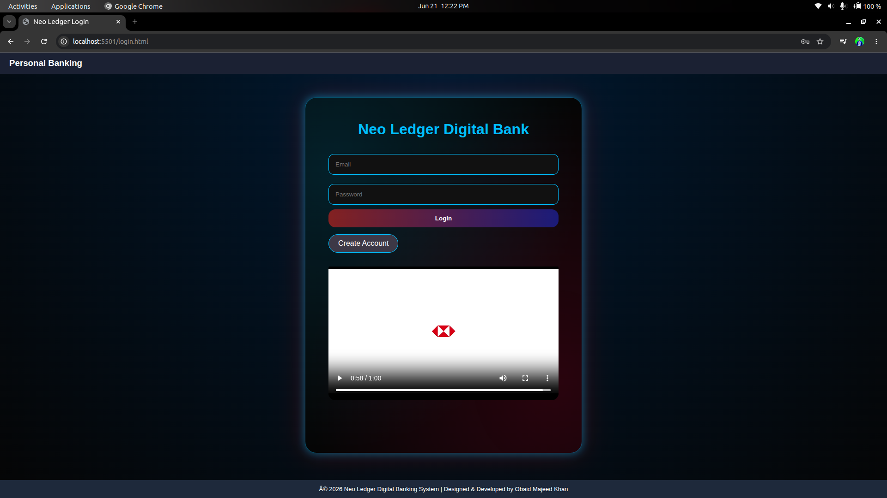
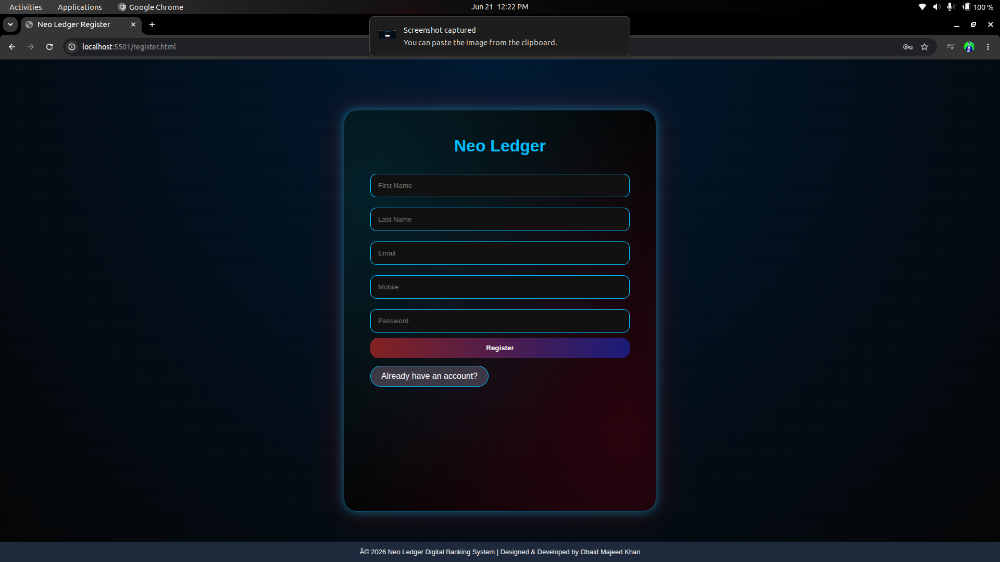
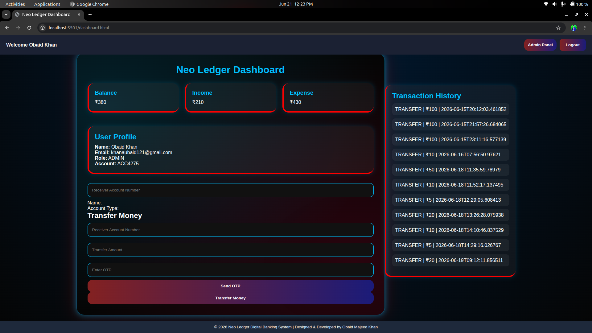

Neo Ledger — Digital Banking System
Java • Spring Boot • Spring Security • JWT • Hibernate • JPA • MySQL • HTML • CSS • JavaScript • Bootstrap • Maven
Developed a full-stack digital banking application that simulates core banking workflows such as user registration, secure login, OTP-based authentication, account creation, balance inquiry, deposits, withdrawals, fund transfers, and transaction history tracking. Implemented Spring Security with role-based authorization, integrated MySQL using Hibernate/JPA, designed RESTful APIs, and built a responsive frontend following MVC architecture for seamless banking operations.
OTP AuthenticationAccount ManagementFund TransferTransaction HistoryRole-Based SecurityResponsive UI


